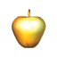
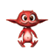

Certains bonus apparaissent lorsque vous
triomphez des ennemis.
 | Ce bonus cumulable vous protège contre les attaques
des ennemis. Vous gagnerez une vie pour 10 bonus ramassés. |
|
 |
Explorez tous les niveaux pour trouver ce
bonus. Vous gagnerez une vie supplémentaire par bonus ramassé.
|
|

| Ce bonus augmente la portée de vos arches et
fourches. |
|
| Ce bonus augmente la vitesse de vos arches et
fourches. |
|

| Ce bonus vous permet d’être invincible !
Profitez-en pour toucher les ennemis car ils ne vous résisteront pas, mais
attention, ce bonus s’épuise très rapidement ! |
|
|
Ce bonus vous permet de planer afin d’explorer les
endroits les plus inaccessibles ! Attention, ce bonus ne dure qu’un court
instant ! |
|
| Ces bonus vous rapportent entre 100 et 300 points. |
En difficulté « normal » et « difficile »,
ne perdez pas votre temps ! Dépêchez-vous, car lorsque votre chronomètre arrive
à zéro, tout le niveau s’inondera progressivement.
Fairy
vous attend à différents endroits du niveau, et vous donnera un bonus de temps
chaque fois que vous arriverez à son niveau.